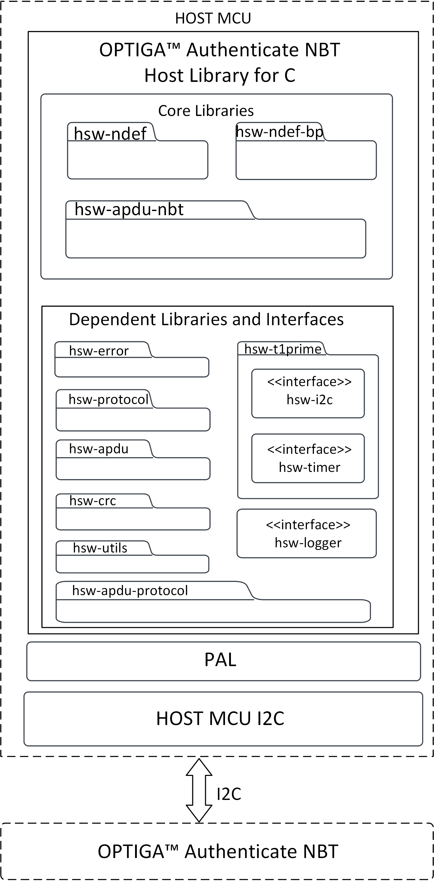
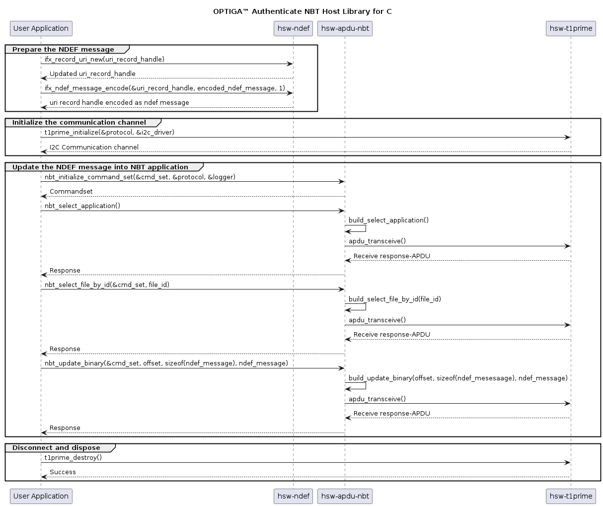

|
hsw-nbt 1.1.1
OPTIGA Authenticate NBT Host Library for C
|
The OPTIGA™ Authenticate NBT Host Library for C offers an extensive API to interact with the OPTIGA™ Authenticate NBT and to utilize its full functionality. The host library is mainly intended to be used in C/C++ applications interfacing to the OPTIGA™ Authenticate NBT via I2C (for example: MCUs).
This guide describes the features and functionality of the host library, including an architecture overview and descriptions of the host library's components. It also conveys the basic procedure to integrate the host library into existing applications.
This guide is primarily intended for embedded application developers who target to integrate the OPTIGA™ Authenticate NBT Host Library for C into their embedded application running on an MCU to interact with the OPTIGA™ Authenticate NBT.
This host library provides high-level command abstractions to communicate with the OPTIGA™ Authenticate NBT. The library is composed of multiple sub-libraries and interfaces which are included in the host library package. The core libraries are designed to be platform-independent and they depend on a number of other libraries to provide their full functionality. Some of these dependent libraries require platform-specific implementations. Generic interfaces are provided by the host library package but concrete implementations of these interfaces need to be provided by the user of the host library with respect to the target platform.
The OPTIGA™ Authenticate NBT Host Library for C includes three core libraries to interact with the OPTIGA™ Authenticate NBT.

hsw-apdu-nbt
The NBT APDU library allows the host application to send C-APDUs to the OPTIGA™ Authenticate NBT and receive R-APDUs from the OPTIGA™ Authenticate NBT. This library is intended to be used with I2C as base layer of the communication channel (base layer of the Protocol interface).
hsw-ndef
The NFC Data Exchange Format (NDEF) specification by NFC Forum defines a common data format to exchange information between NFC Forum devices. This library provides support to build and parse NDEF messages, with support for common NDEF record type definitions. This library can be easily extended to support additional record type definitions.
hsw-ndef-bp
The NFC brand protection record library is an extension to the NDEF library to create and parse NFC brand protection records for the OPTIGA™ Authenticate NBT. This extended library includes NDEF records and parsers to provide the core brand protection functionality of the OPTIGA™ Authenticate NBT. Brand protection-specific encoding and decoding are handled by the library itself. But this library depends on the hsw-ndef library for registering its records and for further NDEF record and message manipulations.
The core libraries are dependent on several other libraries and interfaces. Detailed description of these dependent libraries is provided below.
| Dependent library | Description |
|---|---|
| hsw-t1prime | This dependent library implements the GlobalPlatform T=1' protocol which uses timer and I2C platform-specific interfaces to interact with the OPTIGA™ Authenticate NBT via I2C. This dependent library is provided as a separate protocol stack. This library can be built and linked to hsw-apdu-nbt core library to communicate via GP T=1' I2C protocol. This dependent library is dependent on interfaces such as timer and I2C. Platform-specific implementations of these interfaces are required to access full functionality of the library. |
| hsw-error | This dependent library is used for creating and parsing error information. |
| hsw-protocol | This dependent library provides the communication protocol interface for the NBT APDU library. This dependent library provides functionalities such as initialize, transceive and terminate to communicate with the OPTIGA™ Authenticate NBT. It can be implemented for any communication protocol such as I2C and UART. |
| hsw-utils | This dependent library provides the utility methods such as for byte conversions, string conversions, bit operations, and encoders/decoders for TLV data. |
| hsw-apdu | This dependent library is used to build the APDU command bytes and parse the APDU response bytes according to the ISO/IEC 7816-4 specification. |
| hsw-apdu-protocol | This dependent library is used for sending and receiving APDU command bytes according to the ISO/IEC 7816-4 specification. |
| hsw-crc | This dependent library is a generic library used for CRC calculation. This library is used for CRC calculation of GlobalPlatform T=1' protocol stack. |
The generic platform independent interfaces are provided with the host library to support easy porting to any target MCU. Concrete implementations of these interfaces for the respective target platform are needed to utilize this host library.
| Dependent interface | Description |
|---|---|
| hsw-i2c | This interface is used for the I2C protocol implementation of the GlobalPlatform T=1' protocol stack. |
| hsw-timer | This interface is used for the timer implementation of the GlobalPlatform T=1' protocol stack. |
| hsw-logger | This interface is used for logging information/errors. It offers generic interface that can be populated by concrete implementations, such as file logger or console logger. |
This host library is written with portability in mind. Wherever possible, platform-specific code is avoided and generic interfaces are used. These interfaces offer generic header files that can be included in any library that needs the functionality. A concrete implementation of these interfaces with respect to the target MCU is needed to utilize this host library.
This section will give an overview of the interfaces that need to be implemented to utilize the OPTIGA™ Authenticate NBT Host Library for C on arbitrary platforms.
hsw-i2c
hsw-i2c interface is used to abstract the I2C-specific communication functionality from the target platform. This interface is built on the hsw-protocol APIs. To implement concrete implementation of I2C driver, (at least) the following functions need to be provided. These functions shall mainly wrap the target MCU's I2C functions that can be used in hsw-protocol library.
ifx_protocol_t object with the concrete implementation (for example: ifx_i2c_psoc6_initialize()). This function sets up all members of the provided ifx_protocol_t struct and makes it usable in a generic protocol stack. This function shall do the platform-specific I2C driver initialization.ifx_protocol_t *self: This object is populated in this function. It stores the protocol state, maps the I2C functions of host MCU and also holds the I2C protocol properties. The fields of ifx_protocol_t struct that needs to be populated in the function are:ifx_protocol_t* _base : Base layer of I2C protocol in ISO/OSI stack. Since the I2C layer is the lowest layer of the stack - this is typically set to NULL.uint64_t _layer_id : Layer ID to differentiate I2C protocol layer in a full ISO/OSI protocol stack. By default value is 0. This field can take values starting from 1 to differentiate the I2C protocol layer in full ISO/OSI protocol stack. For hsw-i2c protocol, _layer_id is set to 0x04.ifx_protocol_activate_callback_t _activate : Function to activate I2C protocol. This function will perform the I2C protocol-specific parameter negotiation. This field can be NULL if I2C layer has no specific activation.ifx_protocol_transceive_callback_t _transceive : Function to send and receive data via I2C at once. This field might be NULL but in that case ifx_protocol_t._transmit and ifx_protocol_t._receive must not be NULL.ifx_protocol_transmit_callback_t _transmit : Function to send data via I2C. This field shall be set to platform-specific implementation of I2C data transmit function, which is detailed later in this section. This field might be NULL but in that case ifx_protocol_t._transceive must not be NULL.ifx_protocol_receive_callback_t _receive : Function to receive data via I2C. receive must not be NULL.ifx_protocol_transmit_callback_t _transmit : Function to send data via I2C. This field shall be set to platform-specific implementation of I2C data receive function, which is detailed later in this section. This field might be NULL but in that case ifx_protocol_t._transceive must not be NULL.ifx_protocol_destroy_callback_t _destructor : Function to destroy I2C protocol properties. protocol_destroy() will call free() for ifx_protocol_t._properties. If any further cleanup is necessary, implement it in this function, otherwise use NULL.ifx_logger_t *_logger : Optional Logger object. This field might be NULL if no logger is set.void *_properties : Holds I2C-specific protocol properties/state such as slave address, guard time, and timer for guard time. This field might be NULL if no state is required.I2C (for example: ifx_i2c_psoc6_transmit()). This function must match the ifx_protocol_transmit_callback_t signature and takes three parameters:ifx_protocol_t *self: This is the object populated by the initialization function described above.const uint8_t *data: This is the data to be transmitted via I2C.size_t data_len: This is the number of bytes in data.IFX_SUCCESS: Return value of the function if data is transmitted via I2C successfully. \ Store a pointer to this function in ifx_protocol_t._transmit in ifx_protocol_t struct while initialization. This function shall implement the platform-specific I2C driver transmit functionality. This function must make sure that the I2C guard time is respected, which means await the guard time before transmitting the data (via joining timer) and starting the guard time timer after transmitting data.I2C (for example: ifx_i2c_psoc6_receive()) This function must match the ifx_protocol_receive_callback_t signature and takes four parameters:ifx_protocol_t *self: This is the object populated by the initialization function described above.size_t expected_len: This is the number of bytes to be read.uint8_t **response: This is a pointer to a buffer to store the response.Return value IFX_SUCCESS: Return value of the function if data is received via I2C successfully. To be usable in generic ifx_protocol_t structs, this function does not take an allocated buffer but MUST allocate the buffer itself using malloc. This is necessary because higher layers in the OSI model do not know the amount of response bytes at call time. For I2C, the size allocated must match expected_len.
size_t *response_len: This is a pointer to store the number of received bytes in. If successful the value must be set to expected_len. This parameter is used to be usable in generic protocol stacks where the response length might not be known at call time. \ Store a pointer to this function in ifx_protocol_t._receive in the ifx_protocol_t struct while initialization. This function shall implement the platform-specific I2C driver's receive functionality. This function must make sure that the I2C guard time is followed, which means await the guard time before receiving the data (via joining timer) and starting guard time timer after receiving data.For the I2C-specific functionality, the following getters and setters also need to be implemented. These shall be used to update the I2C driver's parameters, like frequency, slave address, or guard time. These getters and setters are defined in the infineon/ifx-i2c.h interface, which has to be included in the platform-specific implementation.
ifx_i2c_get_clock_frequency(ifx_protocol_t *self, uint32_t *frequency_buffer)ifx_i2c_set_clock_frequency(ifx_protocol_t *self, uint32_t frequency)ifx_i2c_get_slave_address(ifx_protocol_t *self, uint16_t *address_buffer)ifx_i2c_set_slave_address(ifx_protocol_t *self, uint16_t address)ifx_i2c_get_guard_time(ifx_protocol_t *self, uint32_t *guard_time_us_buffer)ifx_i2c_set_guard_time(ifx_protocol_t *self, uint32_t guard_time_us)The functions should be self explanatory. For parameter details check their respective docstrings.
hsw-timer
The hsw-timer interface is used to abstract timer calls from the target platform. Objects of the ifx_timer_t struct are used throughout all libraries to measure timeout values and waiting times. For a concrete implementation of the timer interface, (at least) the following function(s) need to be provided. These functions shall mainly wrap the target MCU's timer functions which are defined in the hsw-timer interface.
ifx_timer_t object with the concrete implementation (for example: ifx_timer_psoc6_initialize()). This function sets up all members of the provided ifx_timer_t struct. This function shall do the platform-specific timer driver initialization.void *_start: Pointer to start of the timer.uint64_t _duration: Duration of the timer.For the timer-specific functionality, the following functions need to be implemented. These functions are defined in the infineon/ifx-timer.h interface, which has to be included in the platform-specific implementation.
ifx_timer_set(ifx_timer_t *timer, uint64_t us): Sets a new timer for the amount of microseconds provided in us and stores all required information in its timer parameter.ifx_timer_has_elapsed(const ifx_timer_t *timer): Checks if the given timer has elapsed. Developers can use the members set by ifx_timer_set() to check if the timer has already elapsed.ifx_timer_join(const ifx_timer_t *timer): Waits for the given timer to elapse. Once again developers can use the data they previously set in ifx_timer_set() to calculate timer end times.ifx_timer_destroy(ifx_timer_t *timer): If ifx_timer_set() allocated any dynamic data this function can be used to perform the necessary cleanup.hsw-t1prime interrupt handling
The GlobalPlatform T=1' data interrupt handling has been encapsuled and is implemented as a plug-in solution. To add interrupt handling to your physical layer you can provide a custom ifx_t1prime_irq_handler_t to the protocol stack using ifx_t1prime_set_irq_handler(). This interrupt handler shall wait until the GPIO interrupt has triggered or the given amount of microseconds has elapsed. It is up to the concrete implementation to check which GPIO pin to use and how to check if the time has elapsed. This enables platform-independent code with interrupt handling being an optional plug-in solution. This encapsulation enables reusable interrupt handlers without the need to add protocol-specifics to the physical layer.
To use hsw-t1prime interrupt handling, a platform-specific interrupt routine has to be initialized and set to be triggered by the GPIO pin connected to the OPTIGA™ Authenticate NBT's interrupt pin.
Refer to the documentation provided with the t1prime "GlobalPlatform T=1' protocol layer" for further implementation information.
hsw-logger
hsw-logger interface offers generic ifx_logger_t structs that can be populated by concrete implementations. These ifx_logger_t structs are self-contained and can therefore be nested, joined, etc. The actual logging function uses printf syntax so it should feel familiar to C developers. These loggers can be configured at runtime to a specific level to only trace the desired data (Debug, Info, Warning, Error). Concrete platform implementations are required to use the host MCU's preferred logging methods (e.g. stdout, file-logger). To provide concrete implementation of logger interface, (at least) the following function(s)need to be provided. These functions shall mainly wrap the target MCU's logging function which are used in the hsw-logger interface.
ifx_logger_t object with the concrete implementation (for example: ifx_logger_psoc6_initialize()). This function sets up all members of the provided ifx_logger_t struct. This function shall do the platform-specific logger initialization.ifx_logger_log_callback_t _log: Logging function for concrete implementation. This _log function shall be set to platform-specific implementation of the logging function, (for example: printf and UART writing).ifx_logger_set_level_callback_t _set_level: Set log level. By default logger_set_level() will simply update ifx_logger_t._level. If no custom setter is required use NULL.ifx_logger_destroy_callback_t _destructor: ifx_logger_destroy(ifx_logger_t*) will call free() for ifx_logger_t._data . If any further cleanup is necessary implement it in this function. Otherwise use NULL.ifx_log_level _level: Set by logger_set_level(ifx_logger_t*, ifx_log_level). This shall be initialized to 0.void *_data: Logger properties/state that can be used internally. This shall be set to NULL, if there is no logger properties to be used.The actual logging functions are available in the infineon/ifx-logger.h interface. While implementing platform-specific functionality of below APIs, include the header file #include "infineon/ifx-logger.h".
Refer to the documentation provided with the hsw-logger interface for further implementation information.
The directory structure of the OPTIGA™ Authenticate NBT Host Library for C follows the pitchfork layout including core and dependent libraries and interfaces.
Install the below toolset to build the host library on a Windows platform.
| Tool | Usage | Supported version |
|---|---|---|
| CMake | Toolchain for the build framework | 3.25.1 |
| MinGW-w64 | GCC Compiler to build libraries on a Windows platform | 8.1.0 |
| MSVC | C/C++ Compiler that comes with 'Visual Studio build tools' to build libraries on a Windows platform | 17.4.3 |
| LLVM | Clang Compiler to build libraries and clang-format tool to format the source code | 17.0.3 |
| Doxygen | Tool to generate documentation from source code | 1.9.8 |
| Ninja | Build system used with CMake to generate ninja build files | 1.11.1 |
If you are using the library on an MCU as target, build the library using the MCU platform-specific compiler and link it to the application. For example, to use the OPTIGA™ Authenticate NBT Host Library for C on a PSoC™ which uses the ARM Cortex-M architecture, build the library using the ARM-GCC compiler arm-none-eabi-gcc and integrate it into the PSoC™ application.
The OPTIGA™ Authenticate NBT Host Library for C uses CMake as the preferred build system to build its code as well as perform additional tasks like building the documentation or static code analysis. It tries to be as generic as possible, not relying on specific IDE integrations to maximize portability.
CMake will look for a suiting compiler and generate the build scripts automatically. For this to work, CMake will need to be able to find:
C99 compiler (for example: gcc on Linux, msbuild/MSVC on Windows)make on Linux, ninja or MinGW on Windows)Doxygen to build the API documentationTo build the host library as a static library, configure CMake and use cmake --build to perform compilation.
Create a build folder in the root path of the host library where CMakeLists.txt exists and execute the commands listed below.
In Windows, by default, the CMake configures to the MSVC compiler. If you want to use any other compiler (for example: MinGW and Clang compiler), additionally execute below command to configure CMake using appropriate generator (rest all steps remains same).
This command by default selects the available gnu-gcc based windows compiler. If you have installed both Clang and MinGW compiler, based on priority order of compiler path present in environment variables, CMake chooses respective compiler.
To generate Ninja build system for gcc compilers, configure CMake using Ninja CMake generator.
Note: Ninja does not support MSVC compiler
The OPTIGA™ Authenticate NBT Host Library for C's API documentation can be found in the docs/ folder. Doxygen is used to generate the API documentation. To build, use the BUILD_DOCUMENTATION flag when configuring CMake to add the custom target libname-documentation to the build (also added to the ALL build by default). Before building the documentation, make sure that Doxygen is installed.
The documentation will be put in a directory docs in CMake's build directory. Each library specific documentation will be available in respective library's docs/ folder.
The OPTIGA™ Authenticate NBT Host Library for C is designed to be easily integrable into existing CMake projects. The simplest way to integrate the host library is to copy the full source tree in a subdirectory in your CMake project (for example: external) and call add_subdirectory() accordingly. For successful compilation of the library, platform specific implementations must be added to build successfully.
extra/ in existing project and add all the platform-specific implementations(ifx-mcu-i2c.c, ifx-mcu-timer.c, hsw-logger-file CMake directory) inside this folder.extra/ folder for build.This will provide your CMake project with all the targets defined in the CMakeLists.txt of the core and dependent library. The OPTIGA™ Authenticate NBT-specific core libraries will be available in the Infineon:: namespace and can be used like any other cmake target. Developers do not need to take care of include or linker paths and can fully rely on cmake's functionality.
The CMake integration for the core libraries will not use any special compiler flags and will work with almost any C99 compiler.
The simplest way to integrate this host library into ModusToolbox™ applications is to:
hsw-timer and hsw-i2c libraries respectively.Now triggering the ModusToolbox™ command to Build Application includes the host library's source files along with its platform-specific implementations for building the application.
When using a different build system other than CMake, the provided CMakeLists.txt in the root folder of the host library can be used as a starting point. Typically,
* The contents of all src directory will need to be compiled.For example, hsw-nbt/libs/hsw-ndef/include
For example, hsw-nbt/libs/hsw-ndef/src
Note: Exclude the mock implementations from the src/ directory present in
hsw-timerandhsw-i2cinterfaces.
If not using CMake to build the code, you will need to define these macros for compilation:
IFX_T1PRIME_USE_I2C macro with a true value (for example: 1) when compiling your code (this enables the build for the I2C variant of the platform setup).An example interaction between the host library's components and an application is illustrated below with a use case: Update URI data in an application file of the OPTIGA™ Authenticate NBT. The hsw-ndef library is used to prepare a URI record and update it on the file system of the OPTIGA™ Authenticate NBT using the hsw-apdu-nbt library.

The usage of OPTIGA™ Authenticate NBT Host Library for C's APIs to update a URI record in the device is illustrated below.
Include the required headers from the host library
Use the GP T=1' protocol channel as an interface to communicate with the OPTIGA™ Authenticate NBT
Update the URI record in the OPTIGA™ Authenticate NBT's NDEF message file (FileID 'E104')
The host library supports the pass-through communication mode. The PT mode is enabled by configuring the IRQ function to PT-IRQ. To handle pass-through interrupts, the GPIO IRQ pin has to be configured to handle pass-through interrupt in the host MCU. This IRQ pin is used to signal when PT data is available. The host MCU can then fetch the forwarded data, process it, and put a response to the OPTIGA™ Authenticate NBT.
The host library's code is statically analyzed using several tools to ensure high code quality. Run all checks (or just a subset) using the tools described here.
The main tool for analyzing the code is Cppcheck. It is widely used and can help find a plethora of potential bugs. For convenience, a suppressions file can be found under (data/cppcheck.suppressions) in every library that can be used in conjunction with exported cmake compile commands.
Note: Use Ninja generator to export compile_commands.json so that the json file will be generated with
includes.
Additional static code analysis can be performed using Flawfinder.
The source code of the host library is formatted using clang-format tool.
The .cmake and CMakeLists.txt files of the host library is formatted using cmake-format tool.